13.物体検出（画像からのクラスタリング）
画像を使った物体検出方法を以下に示す。
※設定詳細は、「Autoware 自動運転ソフトウェア入門」P124参照
事前準備
事前に以下の準備をしておくこと。
準備1
YOLO（You Look Only Onse「リアルタイムオブジェクト検出アルゴリズム」）パラメタのダウンロードを行う。
darknet 共通ファイルのダウンロード
モジュール本体も同時にダウンロードされるが、本書では、Autoware 内のモジュールを使用するため、パラメタのみ利用する。
$ cd
$ git clone https://github.com/pjreddie/darknet.git
学習済みのウェイト（パラメータ）ファイルのダウンロード
$ cd ~/darknet/data
$ wget http://pjreddie.com/media/files/yolov2.weights ← YOLO V2用
$ wget http://pjreddie.com/media/files/yolov3.weights ← YOLO V3用
準備2
以下のいずれかを準備しておくこと。
- velodyne、SMAGVの起動
- ROSBAG再生の一時停止
物体検出アルゴリズムの起動
以下のいずれかを行う。（通常は予測率の高い「YOLO v3」でよい）
SSDの起動
vision_ssd_detect項目の設定をする。
内容は省略
YOLO v2の起動
vision_darknet_yolo2項目の設定をする。
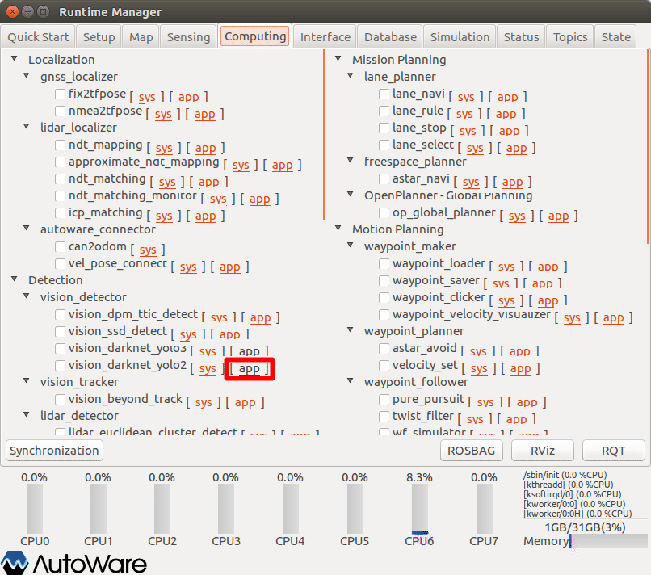
- Runtime Managerの［Computing］タブを選択。
- vision_darknet_yolo2項目［app］押下でパラメタ設定画面を表示する。
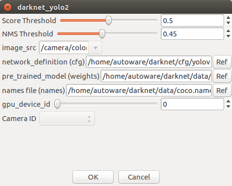
- vision_darknet_yolo2パラメタ項目を適宜設定する。
- ［OK］ボタン押下で前画面に戻る。
| # | 項目名 | 内容 | 単位 | smagv妥当値 |
|---|---|---|---|---|
| 1 | Score Threshold | 一致スコアしきい値？ | - | |
| 2 | NMS Threshold | 非最大抑制しきい値（Non-maximum supression threshold） | - | |
| 3 | image_src | 画像データのトピック名 | - | /camera/color/image_raw |
| 4 | network･･･(cfg) | アルゴリズム起動パラメタファイル | - | $HOME/darknet/cfg/yolov2.cfg |
| 5 | pre･･･(weight) | 学習済みのウェイト（パラメータ）ファイル | - | $HOME/darknet/data/yolov2.weight |
| 6 | names･･･(names) | 検出オブジェクト名定義ファイル | - | $HOME/darknet/data/coco.names |
| 7 | gpu_device_id |
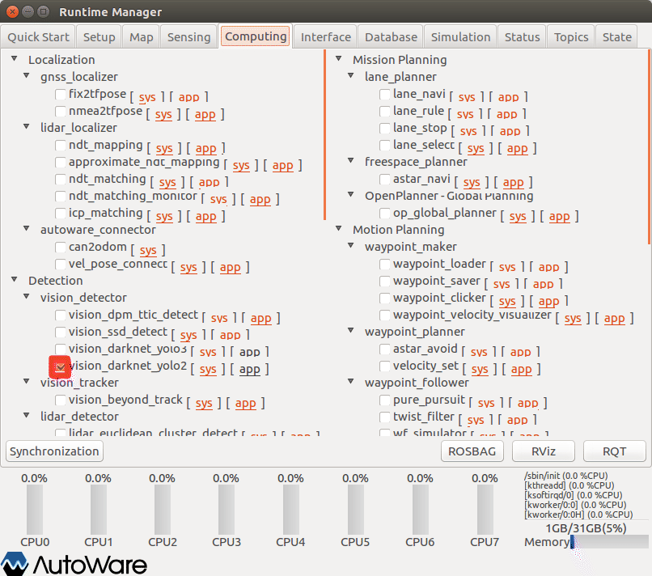
- vision_darknet_yolo2項目チェックBOXをチェックありにする。
YOLO v3の起動
vision_darknet_yolo3項目の設定をする。
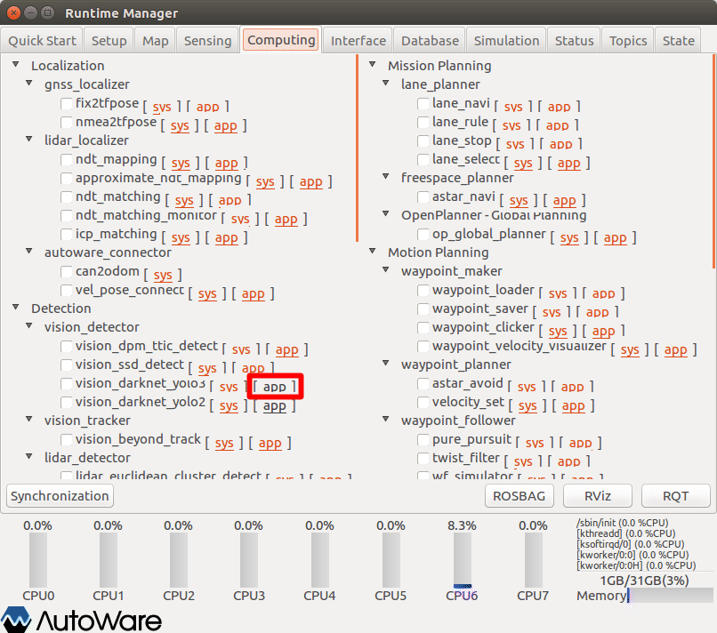
- Runtime Managerの［Computing］タブを選択。
- vision_darknet_yolo3項目［app］押下でパラメタ設定画面を表示する。
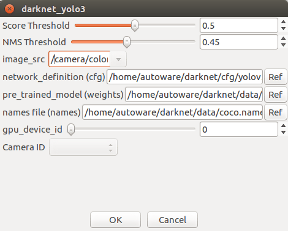
- vision_darknet_yolo3パラメタ項目を適宜設定する。
- ［OK］ボタン押下で前画面に戻る。
| # | 項目名 | 内容 | 単位 | smagv妥当値 |
|---|---|---|---|---|
| 1 | Score Threshold | 一致スコアしきい値？ | - | |
| 2 | NMS Threshold | 非最大抑制しきい値（Non-maximum supression threshold） | - | |
| 3 | image_src | 画像データのトピック名 | - | /camera/color/image_raw |
| 4 | network･･･(cfg) | アルゴリズム起動パラメタファイル | - | $HOME/darknet/cfg/yolov3.cfg |
| 5 | pre･･･(weight) | 学習済みのウェイト（パラメータ）ファイル | - | $HOME/darknet/data/yolov3.weight |
| 6 | names･･･(names) | 検出オブジェクト名定義ファイル | - | $HOME/darknet/data/coco.names |
| 7 | gpu_device_id |
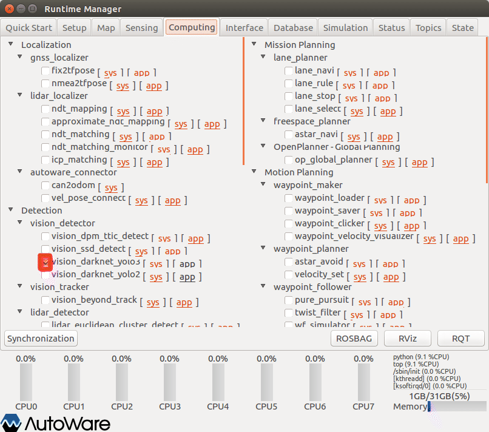
- vision_darknet_yolo3項目チェックBOXをチェックありにする。
CUDAメモリオーバによるエラーが発生する場合は「yolov3.cfg」ファイルを以下変更することで回避できる。変更後は、vision_darknet_yolo3項目チェックBOXをチェックをいったん外し、再度チェックありにする。
[net]
# Testing
# batch=1
# subdivisions=1
# Training
batch=64 ← 32 に変更 ダメなら1にする
subdivisions=16 ← 32 に変更 ダメなら1にする
width=608 ← 416に変更
height=608 ← 416に変更
channels=3
momentum=0.9
decay=0.0005
angle=0
：
：
RVizの設定（イメージビューアパネルの表示）
RVizを起動する。
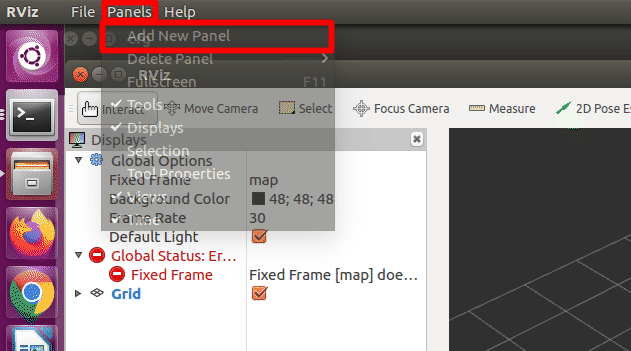
- RViz起動後、「メニュー」－［Panels］－［Add New Panel］を選択し、パネル選択ダイアログを表示する。
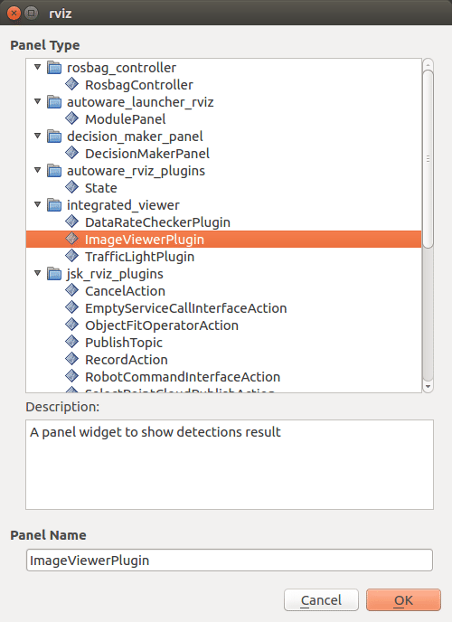
- パネル種類「Image Viewer Plugin」を選択する。
- ［OK］ボタン押下で前画面に戻る。
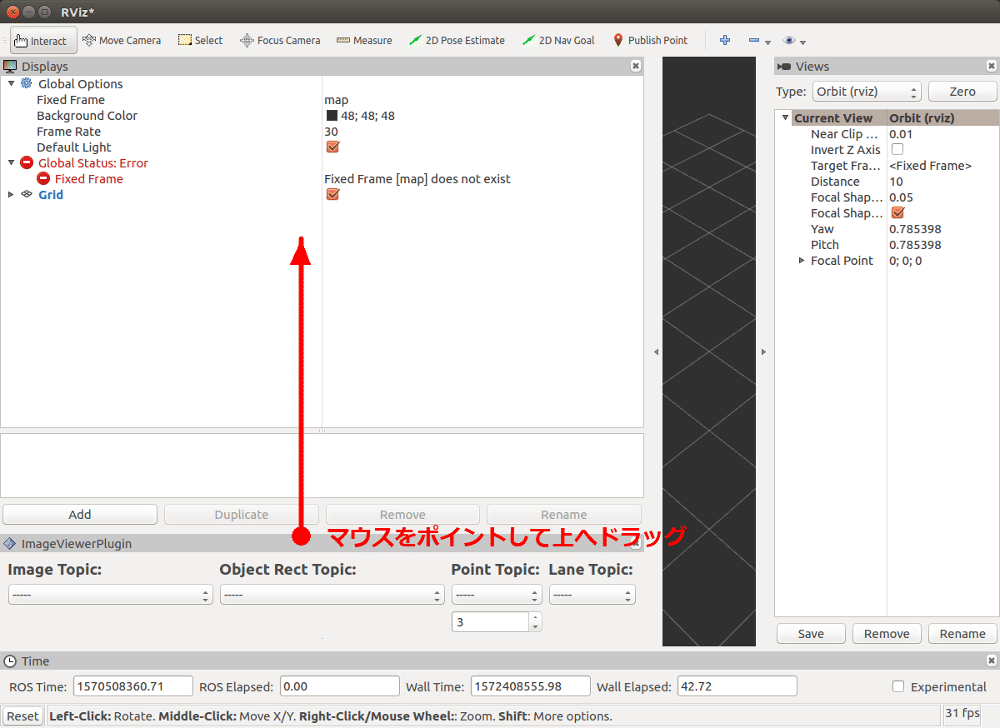
- 追加したパネルのウィンドウ境界辺りをマウスクリックし、そのまま上へドラッグし画像表示部分を見えるようにする。
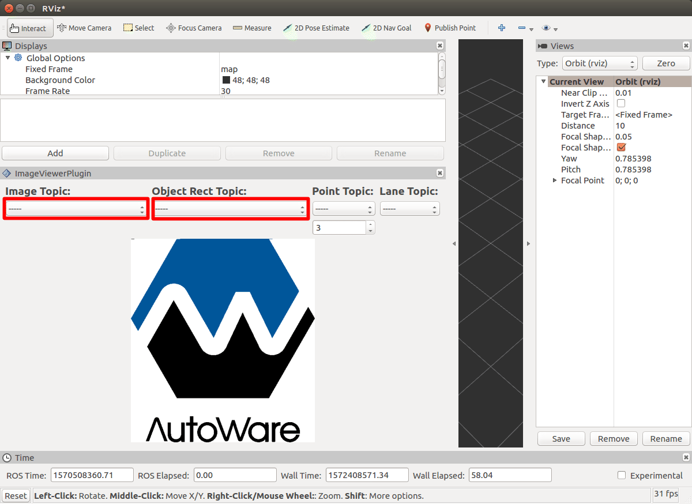
- 画面のプルダウンメニューから以下を選択する。（rosbag再生一時停止の場合、選択項目が見つからないことがあるので、いったん一時停止を解除し、再度一時停止する。）
| # | 項目名 | 内容 | smagv妥当値 |
|---|---|---|---|
| 1 | Image Topic | 画像データトピック名 | /camera/color/image_raw |
| 2 | Object Rect Topic | 矩形オブジェクトトピック名 | /detection/image_detector/objects |
認識結果の確認
認識結果の種類と矩形が表示されることを確認する。
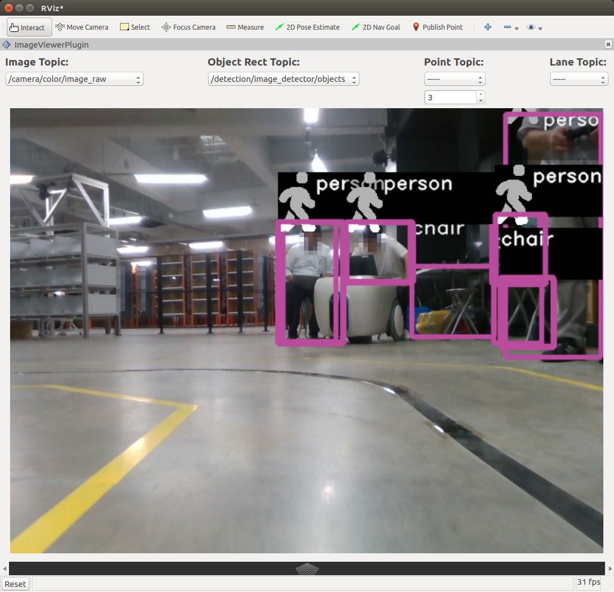
その他
- ROSBAG再生を一時停止している場合は、再生再開をする。